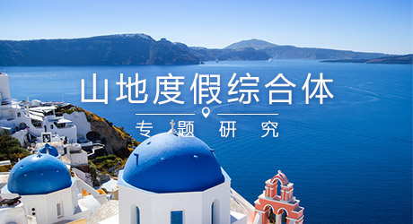
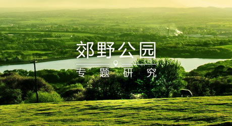
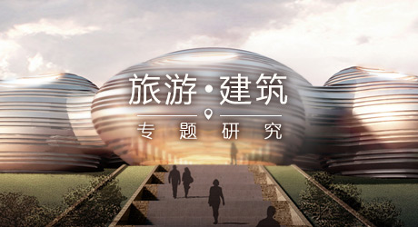
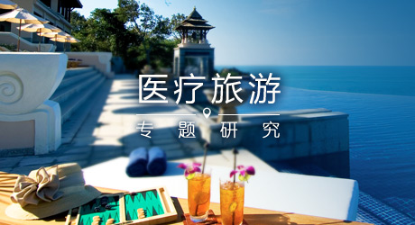

72
让旅游擦亮尘封的工业迹忆
工业遗产是城市发展进程中不可磨灭的部分，是城市的一种特殊语言和历史记忆。工业遗产这种废弃的遗产址是城市发展的包袱，随着国际社会对工业遗产重视、进行保护和开发，工业遗产逐渐成为一种文化财富。它具有独特的历史价值，社会价值，经济价值以及旅游开发价值。
71
以旅游的力量，圆梦乡村振兴
2017年全国乡村旅游消费规模超过1.4万亿元，乡村旅游投资达5000亿，农村旅游市场规模突破万亿级。乡村振兴，产业兴旺是重点、生态宜居是关键、乡风文明为保障、治理有效为基础、生活富裕为根本。游器经过十余年的实践，树立了乡村旅游、旅游扶贫等多项标杆案例...
69
探索乡村振兴的新模式
2017年，“乡村振兴战略”写入十九大报告，中国乡村迎来发展新契机。主题农庄的发展，不仅丰富了乡村旅游的产品和业态，更大大调动了农户、村集体、社会资本、游客等多方的参与度，为乡村振兴发展提供了新模式。
67
度假是种生活，康养是种生活态度
康养型旅游度假区：依托良好的自然生态环境、康养人文活动环境等资源条件，以维护或促进身心健康、医疗康复、延年益寿，使人在身体、心理、精神上都得到和谐幸福感为需求动机，以康养产业为核心，涵盖养老、养生、医疗、文化、体育、旅游等诸多业态，同时配套满足度假旅居功能的商业和居住设施。
66
如何让游客“换个角度看世界”
低空旅游在国外并不算“新”业态，在国内却是一种新鲜事物。国家、企业、景区对低空旅游已经热情高涨，但多方面的客观限制依然众多。低空旅游仍非一个“现实热点”，仍是一个“待勘探的矿藏”。
65
新时代下的中国国家公园
国家公园的共识：以生态保护为核心目的大规模原真生态环境，兼具科研、教育、游憩等功能。国家公园，不仅仅只是一个名字，更是代表了一种对自然与文化区域进行可持续发展、保护与传承的最优化的管理体制。
64
田园综合体
田园综合体概念 田园综合体是以农民合作社为主要载体、让农民充分参与和受益，集循环农业、创意农业、农事体验于一体。国家农发办卢桂敏主任于2017年6月在战略与决策高层论坛上发布报告《科技促进农业供给侧结构性改革》，其中提到田园综合体需要坚持......
63
模糊现实技术与应用
融合与变革 古语有云：“工欲善其事，必先利其器”。一个行业的发展高度取决于这个行业相关的基础科学领域的发展高度。
模糊现实技术相关概念于1935年提出，随着计算机存储、运算技术的突破，2015年迎来了发展元年。
模糊现实技术相关概念于1935年提出，随着计算机存储、运算技术的突破，2015年迎来了发展元年。
62
规划视野下的遗址公园
遗址公园 是利用遗址这一珍贵历史文物资源而规划设计的，将遗址保护与景观设计相结合，运用保护、修复、创新等一系列手法，对历史的人文资源进行重新整合、再生，即充分挖掘城市历史文化内涵，体现城市文脉的延续性，又能满足现代文化生活的需要。属于主题公园范畴。
61
旅游PPP项目的构建与评价
PPP英文Public-Private-Partnership的三个首字母,其含义为公私合营伙伴制度。政府与社会资本合作模式，政府与社会资本为提供公共产品或者服务而建立的全过程合作关系，以特许经营权为基础，以利益共享和风险分担为特征，通过引入市场竞争和约束机制，发挥双方优势，提供公共产品或者服务的质量和供给效率。
60
日本主题乐园IP启示
2016年，上海迪士尼火爆全国。本专题将从中国“”主题乐园热”切入，通过日本四大主题乐园（东京迪士尼| 迪士尼海洋| 环球影城| 富士急）的实地考察与调研，对主题乐园设计关键点进行研究与分析，由此获得时下最热门的主题乐园的“IP设计”启示。
59
度假，我们需要“网红”产品！
IP，英文Intellectual Property（知识产权）的简称，是一种可视化的具象符号。IP往往借助影视、商品等工具成为可复并产生经济效益的文化产业，并通过强力助推（大资本投入等“爆款策略”）且一以贯之的运作，逐渐塑造成为具有庞大市场占有率及永续市场竞争力的强大“品牌” 。

57
后迪士尼时代，IP玩转主题体验
主题公园 ( Theme Park ) 是乘骑设施、吸引物、表演和建筑围绕一个或一组主题而建的娱乐公园 ( Amusement Park )。以特有的文化内容为主题，以现代科技和文化手段为表现，以市场创新为导向的现代人工景区。
56
全域旅游时代的古城复兴
古城旅游 是指以古城为旅游目的地，将古城的历史文化资源作为开展旅游活动的主要吸引物，开展文化考察游、名胜古迹游、体验民俗风情游等多种形式的旅游，让旅游者在古城游览过程中达到文化研究、文化修学的目的。
54
旅游兴城方略
新城新区 是城市规划、建设领域一个悠久但又常新的专业名词，原意是指在城市发展过程中，城市自身扩展形成的新开发地区，称为新区；城市出于自身发展的需要，进一步发展但不能通过扩展实现，需要跳出主城另择新址进行土地开发的地区，称为新城。
52
当旅游插上影视IP的翅膀
IP(Intellectual Property)：指代知识产权，即多种文化资产、符号的聚合体。IP的形式多种多样，既可以是文学艺术作品，或者一个完整的故事，也可以是一个概念、一个形象。影视IP是IP中最具吸金力的组成部分，"影视IP+旅游"背靠文化消费需求剧增，市场空间广阔。
51

全域旅游实战锦囊
全域旅游 是指导旅游产业结构转变的战略理念，其核心理念是旅游业不能单一发展或孤立发展，一个旅游目的地应充分合理规划利用本地旅游资源，并有效的和其他产业融合，建设一个可吸引旅游者逗留时间长，消费高，并能提高当地居民生活质量的旅游城市或县镇。
48

偷得浮生半山闲
基于山地自然人文资源和一定的土地基础，以“山地度假”功能为导向进行的土地综合开发，通过山地独特资源（含自然人文资源）的特色开发打造核心吸引力，以互动发展“酒店集群、山地综合休闲项目集群、山地度假地产”为核心功能构架，整体服务品质较高的一站式度假消费聚集地。
46
厕所革命三步曲
景区厕所 往往成为易于忽视的短板，全国景区游客高达23.3%对厕所和卫生的抱怨表明：景区厕所正急需一套科学而系统的解决方案。由此，游器推出了一套完整的解决之道――《厕所革命三部曲》。且看游器如何设计“景中景厕所”，如何以小见大，让短板成为特色？
45
梦回乡村
在新型城镇化建设的时代背景下，乡愁成为需求。我们希望以旅游介入造乡，使乡村不再没落，乡愁得以永恒。即以外部的智力、财力、人力干预乡村，以满足城市人需求的旅游休闲度假业态为主导，传承地域文化，营造乡村活力。
44
成功营地的风向标
旅游营地：
指在原有的生态基础上人为的进行过相关设施的建设与管理，从而为营地旅游发展提供吸引物、环境依托、内容载体，进而满足游客以露营体验为主，休闲、娱乐、观光、养生、餐饮等多种功能为辅的新兴旅游体验。
指在原有的生态基础上人为的进行过相关设施的建设与管理，从而为营地旅游发展提供吸引物、环境依托、内容载体，进而满足游客以露营体验为主，休闲、娱乐、观光、养生、餐饮等多种功能为辅的新兴旅游体验。
43
让度假成为一种生活方式
度假综合体：
是指基于一定的度假资源与土地基础，以度假功能为导向进行的土地综合开发，通过对度假资源的特色开发打造吸引力，形成酒店集群、休闲娱乐项目集群及度假地产为主要功能的一站式度假消费聚集地。
是指基于一定的度假资源与土地基础，以度假功能为导向进行的土地综合开发，通过对度假资源的特色开发打造吸引力，形成酒店集群、休闲娱乐项目集群及度假地产为主要功能的一站式度假消费聚集地。
40
森呼吸
森林公园：以良好的森林景观和生态环境为主体，融合自然景观与人文景观，利用森林的多种功能，以开展森林旅游为宗旨，为人们提供具有一定规模的游览、度假、休憩、保健疗养、科学教育、文化娱乐的场所。
39
遇见未来的旅行
Bigger than Bigger（没有最大，只有更大）
什么是大数据？大数据就是数量极其庞大的数据资料，无法用现有的软件工具提取、存储、搜索、共享、分析和处理的海量复杂的数据集合。
什么是大数据？大数据就是数量极其庞大的数据资料，无法用现有的软件工具提取、存储、搜索、共享、分析和处理的海量复杂的数据集合。
38
最美的感觉是“在路上”
“步道”又称“游步道”，指位于自然的、历史的景区或公园等户外场所， 沿途有重要景观和资源，将各吸引物贯穿起来，联系各个景区、景点以及活动中心，满足游憩者游览、健身、亲近自然等方面的需求的步行道。
35

旅行传递爱
亲子旅游，小手牵大手 属家庭旅游的细分形式，包含大人和小孩，更关注孩子的需求。只有孩子参加的角色扮演体验园和夏/冬令营/游学类，不属亲子游范畴。孩子年龄段：童年期（0-6周岁）/少年期（7-17周岁）
32

穹顶之下 , 世外逃源
走向野外的度假方式 20世纪随着城市生活节奏的加快，催生了都市人群对野外的向往。户外运动逐渐发展起来，它是在野外举行的集体运动，包括登山、攀岩、野外露营、野炊等项目，户外休闲运动中多数带有探险性，有很大的挑战性和刺激性，反映拥抱自然、挑战自我的追求。
31

“十面霾伏”下的 都市绿肺
发达都市圈和城市群开始兴起
20世纪90年代以后，受香港郊野公园规划成功模式的影响，我国部分发展速度比较快的城市纷纷开始规划和建设郊野公园，如深圳、北京、上海等大都市。
20世纪90年代以后，受香港郊野公园规划成功模式的影响，我国部分发展速度比较快的城市纷纷开始规划和建设郊野公园，如深圳、北京、上海等大都市。
30
丝路情 中国梦
2014年11月，丝路旅游年主题确定。为推动国内旅游及出入境旅游，贯彻落实“丝绸之路经济带”和“21世纪海上丝绸之路”战略构想，中国国家旅游局将2015年确定为“美丽中国-丝绸之路旅游年”。这也是落实国务院《关于促进旅游业改革发展的若干意见》的重要举措。
29

回归规划的价值
旅游规划是一套法定的规范程序，是对目的地或景区长期发展的综合平衡、战略指引与保护控制，从而使其实现有序发展的目标。是在旅游系统要素发展现状调查评价的基础上，针对旅游系统的属性、特色和发展规律，并根据社会、经济和文化发展的趋势，以综合协调旅游系统的总体布局...
28
漂浮在海上的黄金产业
邮轮旅游(cruise ship tourism)是一种以大型豪华游船为载体，以海上巡游为主要形式，以船上活动和岸上休闲旅游为主要内容的高端旅游活动。
现代邮轮业发源于欧洲、繁盛于北美
现代邮轮业发源于欧洲、繁盛于北美
27

客官 : 打尖还是住店？
客栈为古代酒店的称号，现在是界于传统的经济型酒店和星级酒店之间的特色住宿形式，业内并没有明确统一的概念。
游器认为，客栈是指以游客为主要服务对象，位于旅游区或旅游城市的，小规模、特色化、注重体验的个性化住宿形式...
26
水上世界的“船”说
游船旅游：内河以及湖泊航线区域的船舶旅游，旅游产品以观光旅游为主，客源市场以大众化游客为主，旅游行程以短程为主。
游船：航行于江、河、湖（库）区、沿海以及岛屿之间的旅游景点，且连续航行时间不超过12h，航行速度不超过25km/h...
游船：航行于江、河、湖（库）区、沿海以及岛屿之间的旅游景点，且连续航行时间不超过12h，航行速度不超过25km/h...
25
“活着的”遗产
传统村落是指民国以前建村，保留了较大的历史沿革，即建筑环境、建筑风貌、村落选址未有大的变动，具有独特民俗民风，虽经历久远年代，但至今仍为人们服务的村落。 2012年9月，经传统村落保护和发展专家委员会第一次会议决定，将习惯称谓“古村落”改为“传统村落”...
24
“地球之肾”的衰与兴
我国科学家对湿地定义是：陆地上常年或季节性积水（水深2米以内，积水达4个月以上）和过湿的土地，并与其生长、栖息的生物种群，构成的生态系统。
由于研究目的、观察角度及应用对象的不同，湿地的定义有多种，目前国际上公认的是《湿地公约》所作出的定义。
23
小漂流大旅游
漂流（Rafting）――漂于水上，顺水流动，曾是人类一种原始的涉水方式。漂流最初起源于爱斯基摩人的皮船和中国的竹木筏，但那时候都是为了满足人们的生活和生存需要。如今，漂流已成为一项大众旅游活动。漂流旅游指利用流水自然动力、机动动力或人工划桨，乘坐独木舟...
22
旅游景区创A升A
《旅游景区质量等级的划分与评定》（GB/T17775-2003）和《旅游景区质量等级评定管理办法》 （旅办发[2012]166号）是我国的规范性标准化的景区质量等级评定与管理体系。A级景区的创建有着明确的申报条件、评定流程、评定标准和管理办法。
21
旅游统计的“是”与“非”
2014年2月13日，国家旅游局发布了《关于改革完善国内旅游接待统计体系试点工作的通报》和《关于实施〈国内旅游接待统计指标体系方案〉的通知》国家旅游局决定将在全国实施新的国内旅游接待统计指标评价办法。在此之前，国家旅游局从2011年起把探索完善国内旅游接待统计...
20
又是一年赏花季
热点时间 ―― 跟着春天走
每年的中国春天，在卫星遥感影像上，是一幅不断向北推移的绿色梯度图。春天从广州出发，16天到达长沙，23天到达武汉，40天到达郑州，56天到达北京，63天到达沈阳，76天到达哈尔滨，99天到达漠河。
每年的中国春天，在卫星遥感影像上，是一幅不断向北推移的绿色梯度图。春天从广州出发，16天到达长沙，23天到达武汉，40天到达郑州，56天到达北京，63天到达沈阳，76天到达哈尔滨，99天到达漠河。

18
下一波旅游热潮
旅游营地
是指在原有的生态基础上人为的进行过相关设施的建设与管理，从而为营地旅游发展提供吸引物、环境依托、内容载体，进而满足游客以露营体验为主，休闲、娱乐、体育、观光、养生、科普、餐饮等多种功能为辅...
是指在原有的生态基础上人为的进行过相关设施的建设与管理，从而为营地旅游发展提供吸引物、环境依托、内容载体，进而满足游客以露营体验为主，休闲、娱乐、体育、观光、养生、科普、餐饮等多种功能为辅...
17

夕阳催生的朝阳
养老产业：
指以老年人为目标客户群，为其提供设施、特殊商品和服务，满足其特殊需要的，包括老年人衣食住行用医娱学等物质和精神文化方面的产业。它涉及金融、地产、服务、医疗、保险、旅游等多个领域。 我国养老...
指以老年人为目标客户群，为其提供设施、特殊商品和服务，满足其特殊需要的，包括老年人衣食住行用医娱学等物质和精神文化方面的产业。它涉及金融、地产、服务、医疗、保险、旅游等多个领域。 我国养老...
13

旅游 ● 建筑
以旅游视角创造经典的建筑景观 以建筑景观创造美好旅游体验
游器诚建建筑规划联合设计事务所由上海游器旅游景观设计有限公司和上海诚建建筑规划设计有限公司联合组建。拥有国家旅游规划甲级资质和国家建筑行业（建筑工程）甲级资质。提供包括城市设计、旅游建筑方案设计...
12
旅游走进法治时代
《旅游法》带来的影响与启示 《中华人民共和国旅游法》经2013年4月25日十二届全国人大常委会第2次会议通过，2013年4月25日中华人民共和国主席令第3号公布。《旅游法》分总则、旅游者、旅游规划和促进、旅游经营、旅游服务合同、旅游安全、旅游监督管理、旅游纠纷处理...
11

医疗旅游透视
医疗旅游概念
医疗旅游在中文中常被称为保健旅游、健康旅游、医疗旅游。在国外的研究中，医疗旅游也被称为Health Tourism、Health-Care Tourism、 Medical Tourism、 Wellness Tourism。
医疗旅游在中文中常被称为保健旅游、健康旅游、医疗旅游。在国外的研究中，医疗旅游也被称为Health Tourism、Health-Care Tourism、 Medical Tourism、 Wellness Tourism。
10
休闲革新农业
休闲农业：以开发具有旅游价值的农业资源和农产品为前提，利用农业自然资源、景观资源和农村人文资源，设计加入农业生产、农户生活、农耕文化及传统民俗庆典等环节，将农村体验、生态观光与休闲旅游相结合的农旅交叉型业态。
09
全面提升旅游公共服务
背景与政策 2013年2月2日发布的《国民旅游休闲纲要》明确提出“完善国民旅游休闲公共服务”；2011年12月30日国家旅游局印发《中国旅游公共服务“十二五”专项规划》；2012年6月11日国家旅游局《关于进一步做好旅游公共服务工作的意见》
08
创造美好休闲生活
《国民旅游休闲纲要》发布背景解读 2013年2月2日，国发10号文件，发布实施《国民旅游休闲纲要（2013―2020年）》。
我国休假制度的沿革 我国的休假制度经历多次演变，形成了“周末双休制”+“法定假日”+“带薪休假”三方面为主体的休假制度。
我国休假制度的沿革 我国的休假制度经历多次演变，形成了“周末双休制”+“法定假日”+“带薪休假”三方面为主体的休假制度。
07

美丽温泉 创领休闲
随着生活水平及生活品位的提高，人们的脚步开始慢下来，由于温泉有医疗保健等诸多功效，“泡温泉”就成了一个让人身心舒展的上好项目。
温泉旅游集旅游、休闲、健身于一体，正在成为休闲度假旅游的一大热点，温泉经济更是被称为朝阳产业中的朝阳。
05
湖泊旅游开发解密
湖泊是陆地上硅地积水形成的水域宽阔、水量交换缓慢的水体，也是陆地上最大的水体。中国是多湖泊国家，全国天然湖泊面积在1平方公里以上的有2800多个，总面积达8万平方公里。湖泊资源自然风光优美、独具特色，吸引着各相关单位和部门对湖泊资源的开发和利用。以观光游览...
04
智慧改变旅游
“智慧旅游”是在智慧城市的基础上发展而来，是智慧城市在旅游城市和城市旅游两大领域的推广型应用，是将服务对象由城市居民向外来游客的内涵式延生，也是数字旅游发展的高级阶
智慧旅游正在悄然改变着旅游者的消费习惯与旅游体验，逐渐成为旅游者趋之若鹜的时尚潮流。
03
文化旅游聚焦
文化是旅游的灵魂，旅游是文化的载体。文化旅游，一种以消费、体验与享受文化为核心的旅游活动类型。“文化”与”旅游”两个概念的广泛性，使得文化旅游的涵盖面也极为丰富：有历史层面的，也有现代层面的；有民俗层面的，也有宗教层面的；有物质层面的，也有精神层面的...
02
马术运动面面观
马术，以其高雅刺激并存的特点，一直以来都被西方国家视为第一贵族运动，是一项居于高尔夫之上的高端时尚休闲运动。马术作为一种竞技型体育运动在公元前1500年前的古埃及就已经开始了，并成为奥运会中唯一有动物参加的比赛项目，深受世人关注。马术，被认为是一种比击剑...
01
五大模式深度解析乡村旅游
乡村旅游最早起源于19世纪中叶的西方国家，20世纪80年代在我国起步，90年代开始在一些经济发展较快的城市郊区和著名风景区的边缘地带表现出蓬勃发展的势头。我国乡村旅游是在农业结构变迁、城市化进程、居民收入增加、消费结构改变、道路交通改善等背景下发展起来...